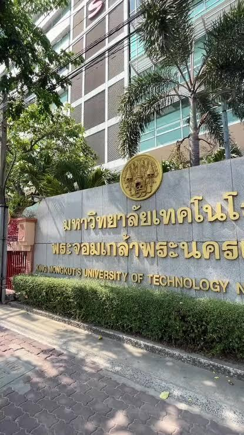
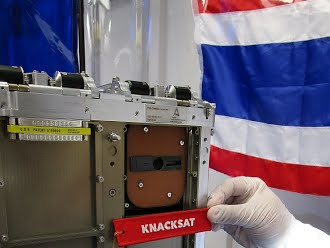
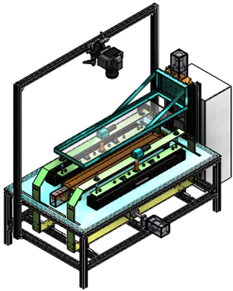

ความสำเร็จและอันดับโลกโดย U.S. News & World Report 2026–2027
มจพ. ได้รับการจัดอันดับให้เป็น อันดับ 1 ของประเทศไทย ในกลุ่มมหาวิทยาลัยด้านวิทยาศาสตร์และเทคโนโลยี (Science & Technology University)
ที่มาKING MONGKUT'S UNIVERSITY OF TECHNOLOGY NORTH BANGKOK

มจพ. ได้รับการจัดอันดับให้เป็น อันดับ 1 ของประเทศไทย ในกลุ่มมหาวิทยาลัยด้านวิทยาศาสตร์และเทคโนโลยี (Science & Technology University)
ที่มา
มจพ. เป็นมหาวิทยาลัยแรกของไทยที่ประสบความสำเร็จในการออกแบบ สร้าง และพัฒนาดาวเทียมขนาดเล็ก (CubeSat) ด้วยฝีมือของอาจารย์และนักศึกษาภายในมหาวิทยาลัยเองทั้งหมด
ที่มา
นวัตกรรมชิ้นนี้เป็นผลงานวิจัยของ มจพ. ที่ได้รับการ จดอนุสิทธิบัตรจากกรมทรัพย์สินทางปัญญา
ที่มา